Fusion extraction de modules
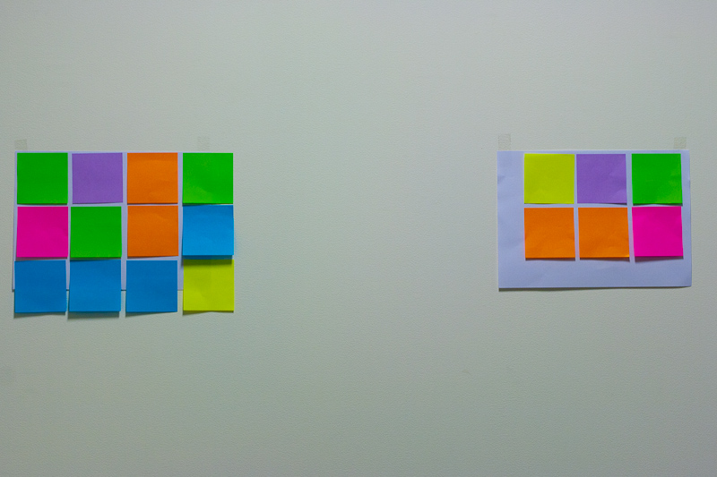
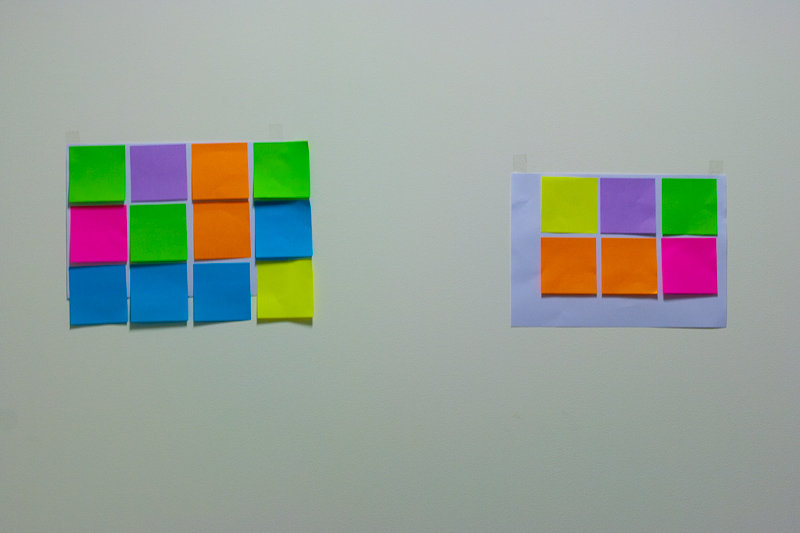
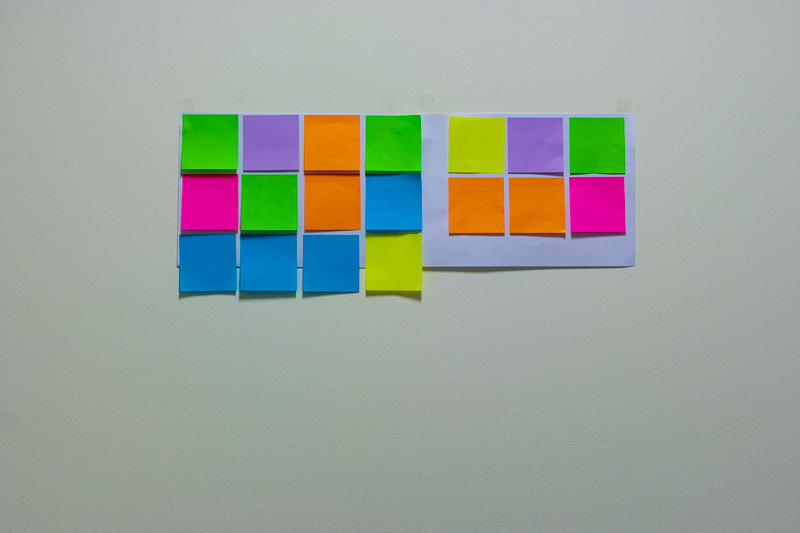
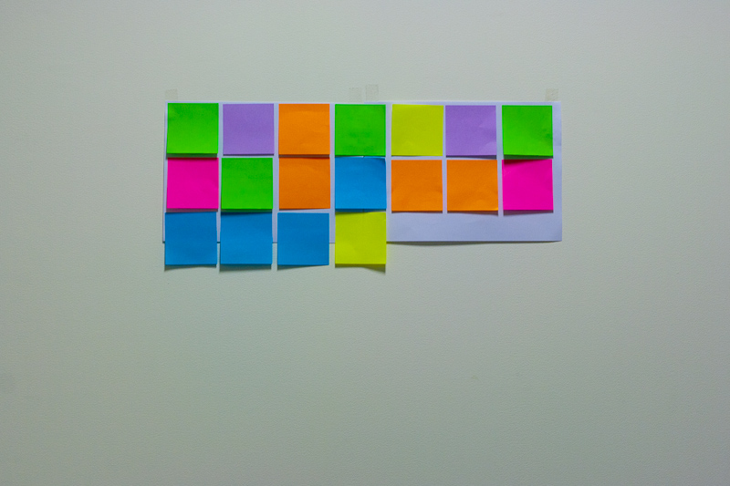
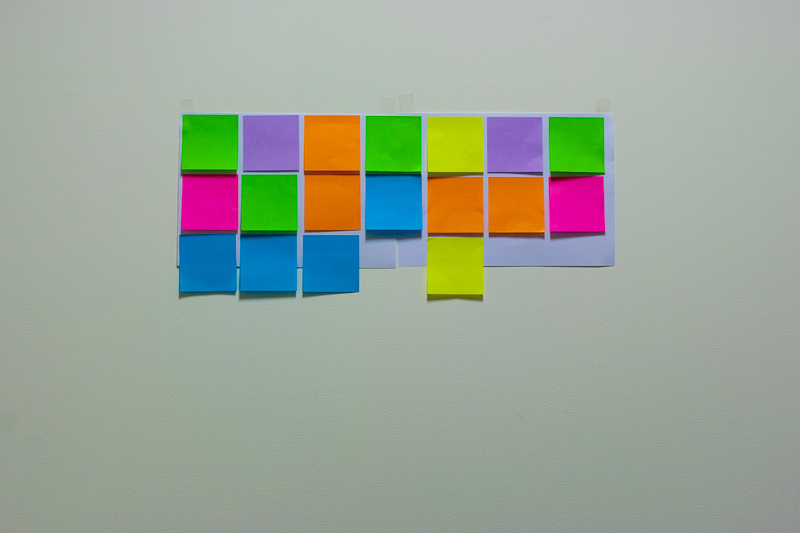
 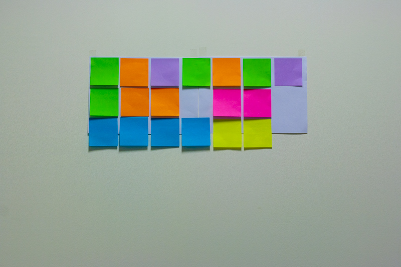
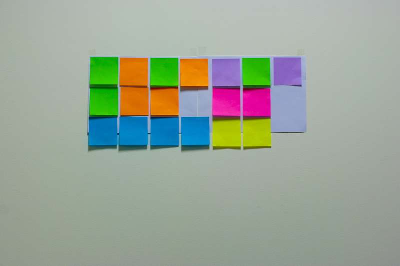
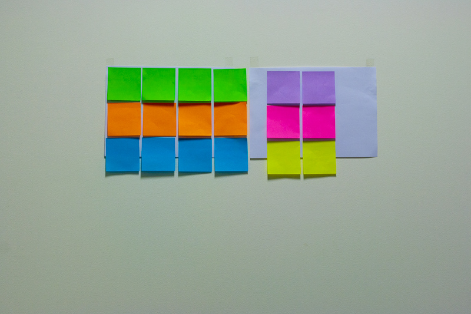
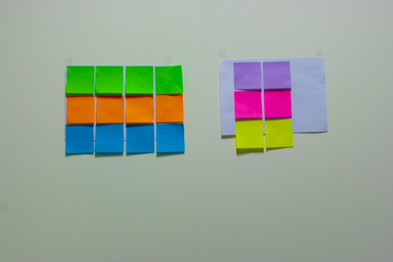
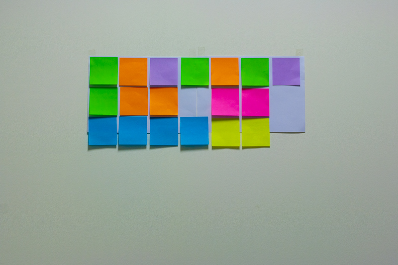
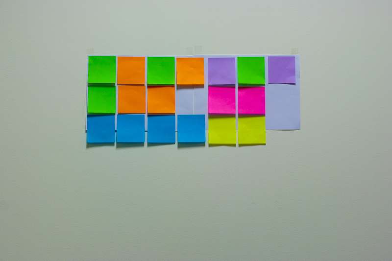
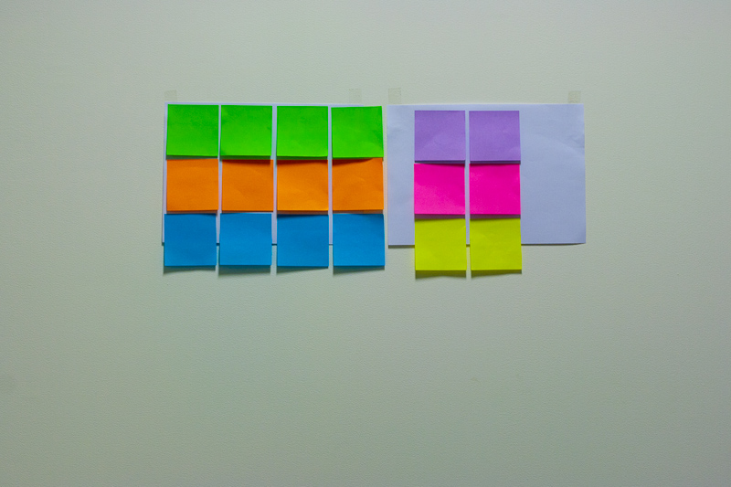
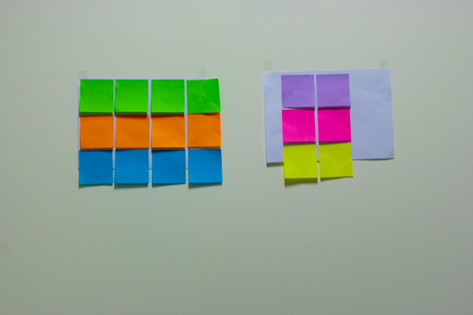
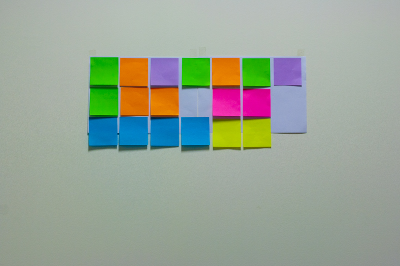
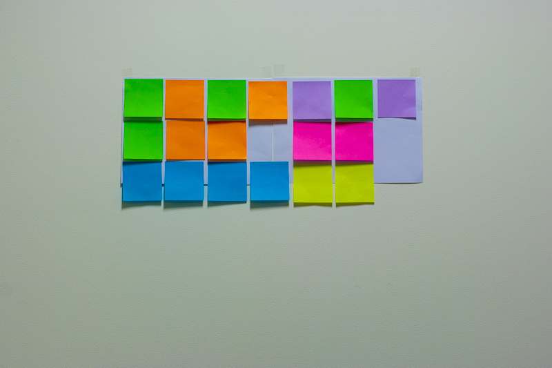
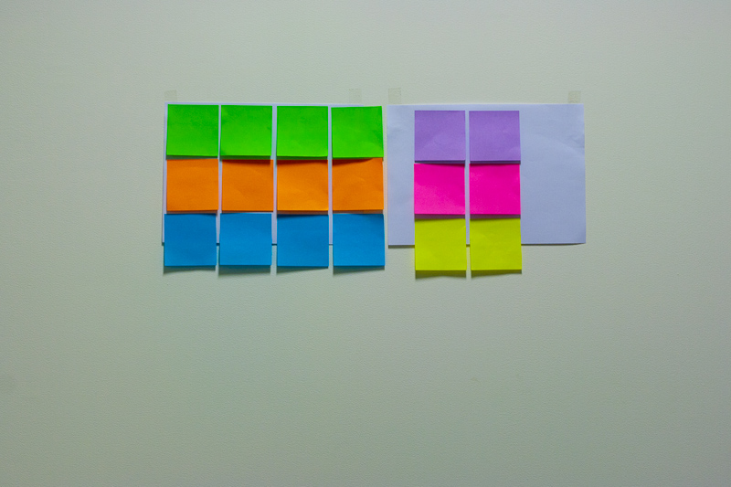
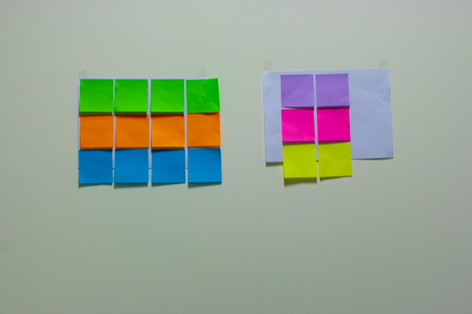
Des clés pour franchir plus en douceur la prochaine étape importante dans la vie de votre logiciel
Développeurs agiles chez Orange - Multimedia Business Services
Co-animateurs du blog barre verte !
Living and working with aging software -- Ralph Johnson QCon 2010
Ce qui paraît difficile à modifier
"the highest level concept of a system in its environment" -- RUP
"[Architecture] needs to be addressed early in a project (...)" -- Diego Fontdevila
"Architecture is about the important stuff. Whatever that is." -- Ralph Johnson
"Things that people perceive as hard to change" -- Martin Fowler
Comment identifier qu'une approche incrémentale est insuffisante ?
Des moyens
Une équipe
Une collaboration pour définir un objectif commun
Indices ou "good smells"
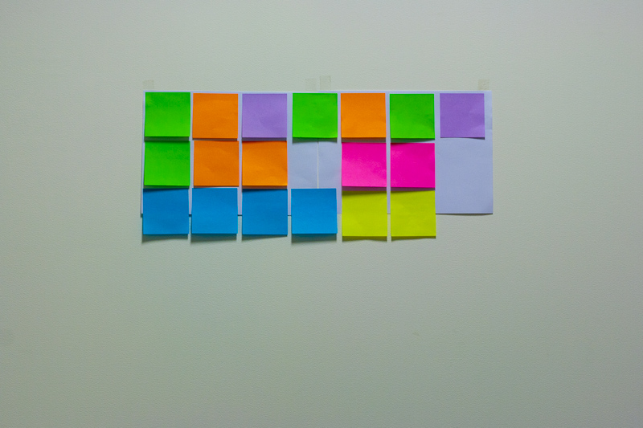
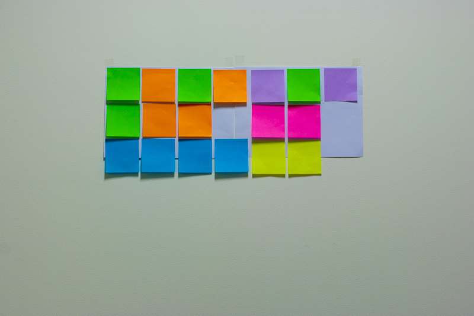
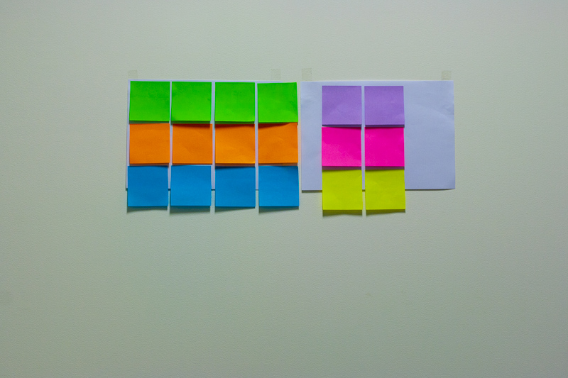
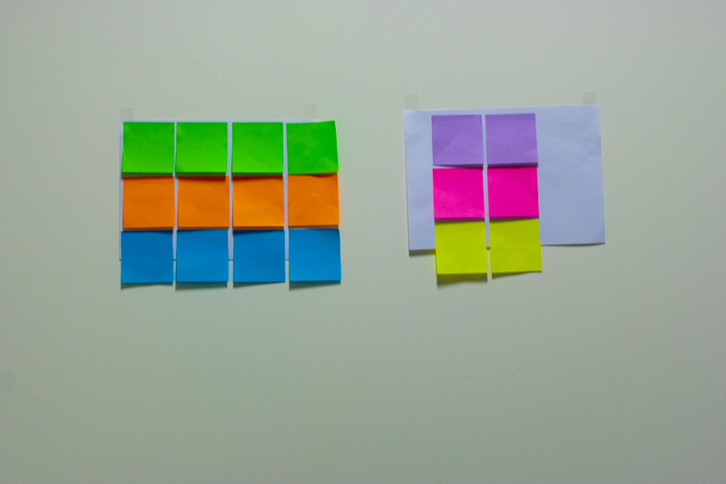